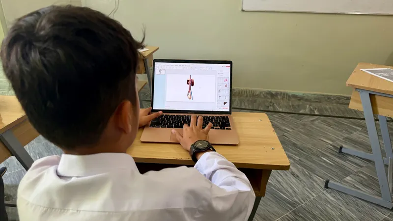
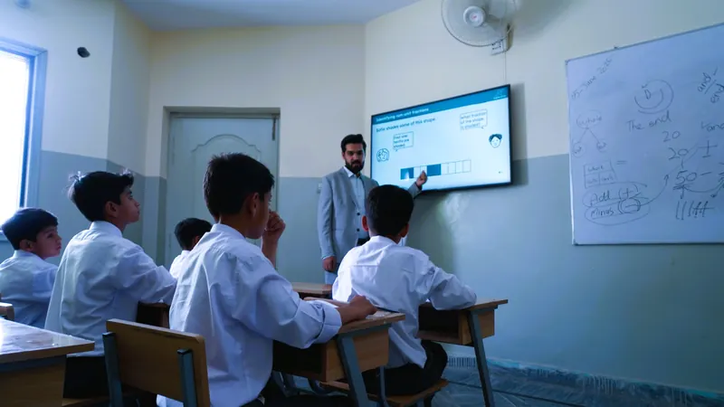
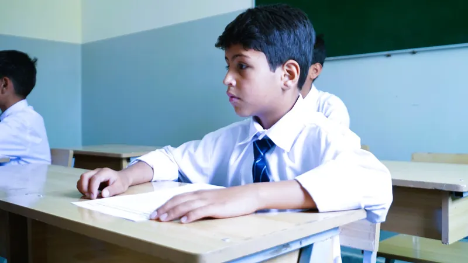

Learning made visible.
Digital lessons that invite questions and make ideas clear.
A school for a world of possibilities
Harnessing the power
of curiosity.
An international standards-aligned school in Quetta.
A Cambridge pathway. A connected classroom.
A lifelong love of learning.

Our digital ecosystem
Teacher-led iPads. Shared smart screens.
Ideas brought to life, then put into practice.

Digital lessons that invite questions and make ideas clear.
Reading, writing and hands-on practice turn ideas into knowledge.

Islamic values, kindness and the confidence to contribute.
The Cambridge pathway
International standards guide our teaching. Our pathway builds towards Cambridge O Levels and IGCSEs.
Find your child’s next stepCome and see for yourself
Meet us. Explore a classroom. Ask your questions.
Arrange a visitFind your way to Suffah